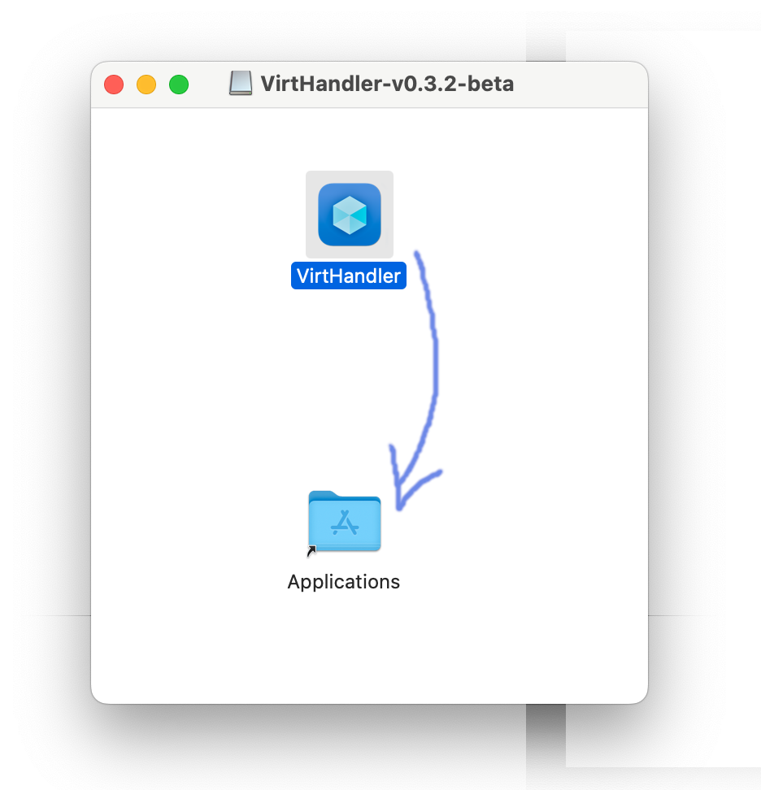

- Download the latest release binary from this repository
Your browser might ask you if you want to allow downloads from this website. Click on "Allow"

- Double click the file you just downloaded
A window will open, containing the VirtHandler application bundle, and a link to your Applications folder.
 - Drag and drop VirtHandler into Applications

- Start VirtHandler from your Mac's launchpad
An error will appear, because you downloaded the application from outside the App Store, that is normal so don't panic.

- Click on "Show in Finder"
Right click on VirtHandler and select "Open"

- Confirm when the alert pops up
The next time you try to open the application, it will not display an error.

VirtHandler